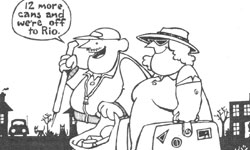

Are you short of vacation cash . . . in need of exercise . . . bothered by a litter-strewn environment? Well, here's how one couple came up with a pleasurable solution to that trio of problems.
As two active, involved senior-citizen college professors, we had concerns but few real personal problems, until our love of cruise ships brought us to a crisis. We returned from a seagoing vacation and discovered that we had two causes for alarm. First, we looked in our mirrors and saw curves-bountiful ones-in all the wrong places. Then we examined our bankbooks and saw disaster . . . a two-digit balance to cope with two-digit inflation.
"First things first," we said. "Our employers won't approve of our showing up to teach with seams that aren't and zippers that won't." For a while, however, we couldn't decide how to shed those unwanted inches. The thought of tackling strict diets brought on immediate withdrawal symptoms! And jogging would probably be a bit much for our pampered muscles at first. But walking! Aha! Now that was an acceptable solution. We like the out-of-doors, and figured we could work a one-hour daily ramble into our busy schedules.
A FORTUNE AT OUR FEET
So off we went, and while we paced, we alternately discussed our financial situation and deplored the litterbugs who had sullied the landscape around us!
However, it wasn't until our local media began running appeals for recycling efforts that light bulbs lit over our heads. Eureka! Those cans littering the highways could-we realized-be a source of cash! So, carrying leakproof plastic sacks and armed with handcarved walking sticks with nails in the ends, we marched out to clean up the environment . . . save energy . . . eliminate our bulges . . . and increase our bank balance a bit, to boot!
Lo and behold, on our first trip out we filled those bags in 30 minutes! Four days later, we loaded up the van and went to the recycling center. We came back with a check for $4.50 . . . with half our load still in the vehicle . . . and with our first lesson well-learned: All cans are not aluminum. The recycling center accepted only unseamed containers with extruded bottoms. Our second lesson had to do with bulk . . . we found it impossible to carry as many cans as we could pick up in an hour until we learned to smash them. (Luckily, many of the containers are already flattened by cars or hand-crushed by macho-or perhaps mocha-drinkers.)
WALKING WISDOM
We also began to learn the "law of the sidewalk". Take dogs, for instance. Friendly, well-trained canines make our walks more enjoyable, but upon encountering misanthropic mutts, we've found it best to cross the street or head in the opposite direction. Then there are the "hair-raising hot rodders", who soon teach unsuspecting pedestrians to always face toward the traffic when no sidewalks ate available . . . to be on the alert for flying objects . . . to watch for protruding arms . . . and to stay well back from mud puddles.
Actually, some of our colleagues and friends have had much more difficulty than we've had adjusting to our recycling rambles. Their most common reactions have been pained, embarrassed grimaces that-we suppose-they hope will be interpreted as smiles. Perhaps an episode described by a student will help explain that lack of acceptance. The young woman said she was driving with some friends and saw us. "Look at that poor old couple scrounging for cans!" she exclaimed. There was a pause then, before she burst out with, "Oh, my God! They're my teachers! "
Of course, there are those whom we've converted . . . they walk with us!
LITTER, LITTER EVERYWHERE
It took us only a month to become completely hooked on recycling walks, so we now hike every day that our schedules and the weather allow . . . but the distances that we cover on our outings vary. At first, we were lucky if we traveled two miles. Now, our distance potential depends on the amount we can carry and on whatever unusual circumstances we might encounter. For instance, one day we found two large sacks of already crushed cans on a vacant lot . . . and cut our walk short to reap the easy rewards. Another time, our bonanza was two dozen returnable bottles, which necessitated that we go home to get the van. We sometimes place such unexpected loot in caches, which allows us to range far and wide in our search for recyclables.
Our direction also varies, since we've discovered that it takes about four days for litterers to dirty an area after we've cleaned up. There are no locations that are immune to litterbugs, either! Visiting the site of a duplicate bridge tournament, we found that the players had hidden their empties in restrooms, the hotel lobby, the parking lot, and (occasionally) in trash receptacles. When walking around building sites, we look for cans in nearby woods, behind heavy equipment, and in unfinished rooms.
CASE HISTORIES
Some of our finds would stretch the imagination of the most uncritical listener. How, for example, did 23 soft-drink bottles (and, weeks later, another 31) get completely stuffed with cigarette butts? Why did someone discard a child's shirt and a pair of men's slacks, both with price tags and labels intact . . . or a smoke alarm, still in its box . . . or a large container of fresh bakery goods?
Then there's the unopened beer-probably four or five cases all told-that we've found during the ten months we've been walking. We don't drink it (it wouldn't help us in our struggle to keep our weight down), but the free drinks do allow us to be generous hosts. Dollar bills and coins are no rarity, either!
Now that we've walked for almost a year, each of us can report the loss of several inches in birth. Our clothes fit better, and we feel great! Better yet, the money collected by recycling litter will be more than enough to handle incidental expenses on our next (dreamed of) cruise. We've made the landscape a bit more appealing, too, and helped save some precious energy. Best of all, we've had a marvelous time! On days when-for one reason or another-it's not possible for us to walk, we feel downright cheated! Strange as the combination may seem, cruise ships and recycling rambles have definitely become important parts of our lifestyle!
|
 |
|
|